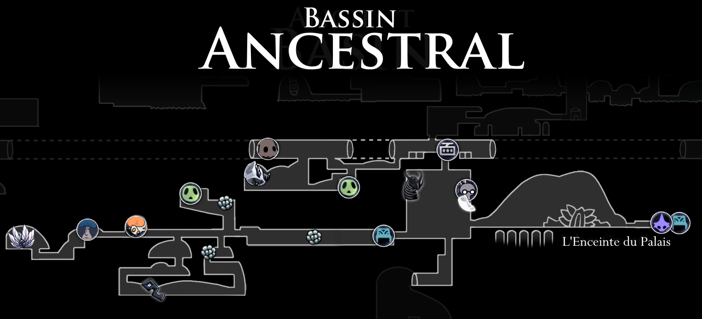
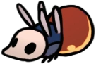
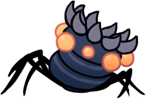
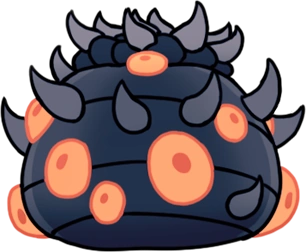
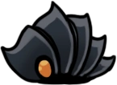
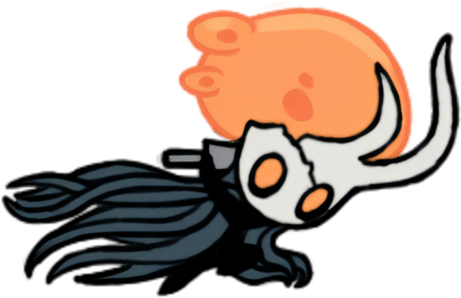
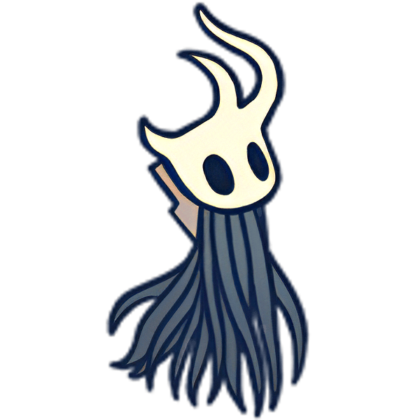

Bassin Ancestral
Une région dépourvue de vie, à l'exception de
quelques formes de vie gravement infectées.
Carte
Lore
Une vieille région, le Bassin Ancestral est rempli de vieilles structures et de routes qui ont été formées comme si la roche elle-même possédait une volonté. Le Roi Pâle a construit son palais dans le Bassin Ancestral, et c'est à partir de là que le royaume d'Hallownest s'est étendu. Il régnait sur Hallownest depuis le Palais Blanc, qu'il quittait rarement. Le palais a disparu en même temps que le Roi Pâle après la réapparition de l'Infection.
Connexions
Le Bassin Ancestral est relié à ces zones :
Ennemis
-
Aspid Chasseresse
Une créature chassant souvent en groupe. Terrasse ses proies en crachant un liquide corrosif. Des prédateurs astucieux qui essaieront de vous tuer à distance. Chargez dans le tas et découpez-les. Vous verrez que ce ne sont pas des créatures si rusées, une fois qu'elles sont mortes.
-
Belfly

Une créature possédant de fines ailes qui dissimulent un ventre très instable. Elles sonneront leur propre vie pour protéger leur territoire. Une créature coléreuse sans égard pour sa propre vie. Une créature qui ne connait pas la peur... peut-on vraiment l'appeler "proie" ?
-
Bulle Infectée
Cellule unique infectée. Possède un esprit simple. Elle peut flotter en se servant des gaz de son corps. L’infection qui se propage dans les veines mortes du royaume... a-t-elle un esprit ? Produit-elle de l’Âme ? Est-ce vraiment vivant ?
-
Mawlek Inférieur
Attaque en crachant de l’acide et en entaillant le corps de son ennemi avec ses pinces frontales. Si vous essayez de les affronter à distance, ces créatures cracheront des boules collantes et gluantes de suc gastrique ignoble. Approchez-vous rapidement et attaquez avec détermination.
-
Blob Parasite
Organisme unicellulaire, complètement infecté. Erre sans but. De l’air particulièrement étrange provenant d’en haut s’infiltre dans Hallownest depuis des années. Une partie de cet air est devenue liquide, et une partie de ce liquide est devenue chair, et cette chair a pris vie. Je ne sais pas trop quoi penser de tout cela.
-
Mawlurk
Une grande créature immobile. Crache du venin de manière frénétique quand des intrus s’approchent de trop près. Comment ces idiotes ont-elles perdu leurs pattes ? Je suppose qu’il est possible de perdre n’importe quoi quand on y met vraiment du sien.
-
Rampant des Ombres
Une créature qui arpente uniquement des endroits profondément enfouis sous terre et plongés dans l’obscurité. Elle n’a jamais été vue en train de boire ou manger quoi que ce soit. -Ces petits rampants sont faibles et ne présentent aucune menace, mais quelque chose à leur sujet me perturbe. La façon que ces créatures ont de se déplacer et ces bruits étranges qu’elles font... tellement bizarre.
Boss de la Zone
Le Vaisseau Corrompu
Le Vaisseau Corrompu était autrefois un vaisseau, tout comme le Chevalier, créé par le Roi pâle et la Dame blanche. Il existe de nombreux vaisseaux brisés dans les Abysses. Les vaisseaux ont été créés pour accomplir une tâche, celle de contenir l'Infection, mais de nombreux vaisseaux ont échoué et ont péri ou se sont brisés parce qu'ils n'étaient pas assez purs pour contenir son pouvoir - pour contenir l'Infection, le vaisseau doit être pur, il doit être complètement creux, ce qui implique qu'un vaisseau doit avoir été rempli par le Néant pour être pur et creux.
Lorsque l'on rencontre le Vaisseau Corrompu, on peut penser qu'il s'agit d'un simple cadavre de vaisseau à la tête brisée. Mais dès que l'on entre dans l'arène, le chemin que emprunté se referme, le sol commence à trembler et se remplit de poussière, et des Blob Parasite apparaissent et commencent à s'accumuler dans la tête brisée du vaisseau qui deviendra bientôt le Vesseau Corrompu.
Une fois que vous aurez vaincu le Vaisseau Corrompu, son cadavre restera au sol et vous pourrez utiliser l'aiguillon des rêves pour déclencher un combat de boss de rêve contre le Proche Disparu, une autre variante du Vaisseau brisé.
Le Proche Disparu (rêves)
Le Proche Disparu est ce qu'était le Vaisseau Corrompu avant d'être infecté. Il s'agissait d'un vaisseau qui avait réussi à s'échapper des Abysses, comme le Chevalier. Malheureusement, comme il n'était pas complètement creux, il a été infecté dans le Bassin Ancestral par des Blob Parasite et est devenu le Vaisseau Corrompu.
Évènements
- Obtention des Ailes de Monarque
- Obtention d'une clé simple
- Obtention d'un minerai pâle
- Accès aux Abysses
- Accès au Palais Blanc
- Accès au Tramway
- Station Coléoptère : Station Cachée
- Rencontre de Cloth
- Rencontre de Monsieur Champignon #5